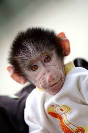

.jpg)
Обезьянки – смышленые и энергичные животные, которых люди приручили много веков назад. Да и сейчас желающих завести дома экзотического питомца немало. Однако, если и вас посетило такое желание, учтите, что молодые приматы стоят довольно дорого, требуют особых условий содержания, а также много внимания и заботы со стороны хозяина. Домашнее животное обезьяна – это действительно питомец для тех, кто готов уделять много времени общению и дрессировке любимца. Породы обезьян для дома есть разные. Предпочтение стоит отдавать тем, которые не вырастают более 1 м и имеют вес до 3-4 кг. Обезьяны имеют острые зубы, цепкие лапки и достаточно сильны, поэтому при проявлении агрессии крупных особей возможны серьезные травмы. Самые популярные обезьяны для дома: игрунки; капуцины; макаки; саймири и др. Такие виды домашних обезьян как мартышки и верветки могут позволить себе только опытные заводчики, которые знают, как правильно дрессировать приматов и ухаживать за ними. Эти породы более умные, хорошо поддаются обучению, но и вероятность получить травму, если животное не в духе, гораздо выше, чем при контакте, например, с игрунками

Можно ли завести дома обезьяну Конечно, вы можете завести дома обезьяну. Но сначала подумайте, есть ли возможность обеспечить ей нормальные условия жизни, приближенные к естественной среде обитания, а также полноценное питание. Обезьяны как домашние животные требуют особых условий содержания. Нужно учитывать, что в природе они много двигаются, поэтому для поддержания хорошего здоровья и настроения нужно обеспечить питомцу возможность бегать и скакать. То есть придется ставить большой вольер или выпускать животное из клетки. Если вы не готовы к этому, лучше отказаться от покупки обезьяны для дома. Конечно, вы можете запереть питомца в клетке, но какой тогда смысл заводить обезьянку, если вы сможете наблюдать за ней только через решетку и не будете иметь возможности подержать на руках, погладить, поиграть. Также стоит подумать, сможете ли вы найти нужные продукты питания для питомца и приобретать их постоянно. Поищите заранее ветеринарного врача, специализирующегося на приматах, и проконсультируйтесь с ним по вопросам подготовки дома для нового любимца, а также договоритесь о профилактических осмотрах, поинтересуйтесь, какие заболевания характерны для того или иного вида обезьян.
Сложно ли держать обезьяну дома Маленькие обезьянки, которые рекомендуются для содержания в доме, очаровательны, но дрессировке они поддаются плохо. Самые смышленые и интересные – макаки – довольно крупные, а другие виды домашних обезьян не слишком склонны выполнять команды хозяина. Их невозможно дрессировать в прямом смысле слова, этот процесс скорее походит на воспитание ребенка: нужно хвалить за хорошее поведение и необидно наказывать за плохое. При этом никаких гарантий, что животное быстро сделает выводы и «исправится», нет. Еще одна сложность – размещение в доме большой клетки или вольера. Место для клетки должно быть хорошо освещено и защищено от сквозняков. Обеспечить питание обезьяны дома сравнительно легко – большинство приматов веганы, некоторые едят насекомых, например, сверчков, а также отварное мясо птиц и яйца. Поэтому главная задача – обеспечить питомцам сбалансированный рацион и проследить, чтобы в меню всегда были цитрусовые и другие продукты, содержащие витамин С, поскольку организм обезьян не способен вырабатывать его самостоятельно. Чистой воды у обезьянки всегда должно быть вдоволь. Для прогулок вне клетки придется подготовить пространство – хотя бы одну комнату. В ней придется убрать все острые и хрупкие предметы, лекарства, другие вещи, опасные для животного или дорогие вам. Если вы понимаете, что выполнить все эти условия вам по силам – смело отправляйтесь в зоомагазин и выбирайте маленькую обезьяну домашнюю.
